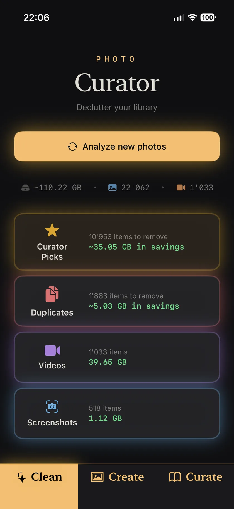

Around Christmas 2025 I sat down to make a photo album. My son had just turned three, my daughter was nine months. We'd had Christmas at home, and before that a rare full-family trip to Tenerife — grandparents, aunt, uncle, cousins, all of us. I wanted small printed albums of those weeks. Something the kids could open and flip through now, because they love doing exactly that, and something they could look at in twenty years to see what they were like when they were this small.
I opened Photos, started scrolling, and gave up somewhere in the spring.
Thousands of near-identical shots. Half-started albums I'd never finished. No sense of where the good photos actually were. The album never got made, and the library kept growing.
Then I went at it properly. Over about two weeks that Christmas I cut the library from over 30,000 photos down to 22,000, entirely by hand. It worked, in the sense that the number went down. It also convinced me that nobody should have to do it that way, and by January I'd started building an app instead.
What follows is what those two weeks taught me: the order that works, what the built-in tools do and don't catch, and how to know when to stop.
Why does an iPhone photo library get this bad?
Because nothing in the system ever asks you to choose. Every other kind of clutter has a moment of reckoning — a drawer that won't shut, a wardrobe that's full. A photo library has no edge. iCloud quietly absorbs the overflow, and the only signal you ever get is a storage warning that arrives at the worst possible time.
Three habits do most of the damage. Taking the same photo several times — you fire off six shots of a toddler because one of them will be good, and then you keep all six. Screenshots, which arrive by the dozen and are almost never looked at again. And videos, which are invisible in the timeline but enormous on disk.
That last one surprises most people, including me. In my library, 1,033 videos account for roughly 40 GB — about a third of the whole thing, from under 5% of the items. Meanwhile my 518 screenshots, which feel like the mess, come to barely 1 GB. Screenshots are a tidiness problem. Videos are a storage problem. It's worth knowing which one you're actually trying to solve before you start.
Where should you actually start?
Work outward from the decisions that cost you nothing, and leave the emotional ones for last. In practice that means this order:
- Duplicates and bursts. Photos that are visually the same shot — a re-import, a burst pair, two files a second apart. Almost always pairs rather than piles. There's no real decision to make: one goes, nothing is lost.
- Similar shots of the same moment. Not identical files — the six attempts at the same group photo, from slightly different angles and distances, where two people blinked and one is soft. This is where the real volume is, and where the actual judgement lives.
- Screenshots. Fast, low-stakes, and satisfying. Little storage payoff, but a big drop in visual noise.
- Large videos. Sort by size, not by date. A handful of long clips usually account for more space than thousands of photos.
- Everything else. Blurry shots, accidental pocket photos, the receipt you photographed in 2021.
Steps one and two are worth separating, because most people — and most apps — treat them as the same job. They aren't. A duplicate is a file-level problem with an obvious answer. Six versions of the same moment is a taste problem, and it needs you to be looking at all six at once. Lumping them together is exactly what makes cleanup feel endless.
The reason the order matters at all is stamina. If you start at step five you'll spend forty minutes agonising over one photo of your kid and quit. If you start at step one you'll have cleared a thousand items before making a single hard call, and by the time the hard calls arrive you're warmed up and quicker at them.
One rule I'd give anyone starting: don't try to finish in one sitting. This is a job for four or five twenty-minute passes, not a weekend. The library took years to accumulate; it does not need to be solved on a Sunday.
What does Apple's built-in Duplicates tool catch — and what does it miss?
Apple's Photos app has a Duplicates album (Albums → Utilities → Duplicates), and it's genuinely useful. It finds pixel-identical copies and lets you merge them, keeping the highest-quality version and combining the metadata. If you've never used it, use it — it's free and it's already on your phone.
Its limit is that it only sees photos that are the same file. In my 22,000-photo library it proposed around 600 items. That's 600 real wins for zero effort, and I'd take it every time.
What it doesn't catch is everything that's visually identical without being byte-identical: a photo and its re-import, two frames a second apart where nothing in the scene moved, the same image saved twice with different metadata. To your eye these are the same photo. To a file comparison they aren't. Looking for visual sameness rather than file sameness roughly triples the count — on my library it turns up 1,883 items instead of 600. Still mostly pairs, still nothing lost, just three times as many free wins.
And underneath that sits the much larger category Apple's tool was never trying to address.
How do you choose between six photos of the same moment?
The honest answer is that the hard part isn't choosing — it's not knowing what you're choosing between.
These aren't near-duplicates. They're the six goes you had at the same photo: everyone on the sofa, but from standing and then crouching, closer and then wider, one where your son is mid-blink and one where nobody is looking at the camera. Six genuinely different photographs of one moment, of which you want one, maybe two.
I tried several of the photo-cleaner apps on the App Store before building anything myself, and nearly all of them work the same way: one photo at a time, swipe left to delete, swipe right to keep. That's fine for fifty photos. At twenty thousand it becomes unbearable, and not because of the effort. It's because when a photo appears alone on screen, you have no idea whether it's one of two attempts or one of fifteen. So you keep it, just in case. You keep everything, just in case, and an hour of swiping removes almost nothing.
Seeing the whole group at once fixes it. Six shots side by side, with the sharpest one already marked, is a two-second decision — and a decision you can trust, because you can see exactly what you'd be giving up.
That's the part of the problem Curator was really built for. Its Curator Picks feature recognises photos of the same scene even when they're not near-identical — different poses, different angles and distances, the same landscape shot four ways — and proposes keeping the best of each: in focus, eyes open, everyone smiling. On my library that comes to 10,953 suggested removals, around 48% of my photos and about 35 GB. I don't accept all of them; with photos of the kids I regularly keep one or two more than it suggests, which takes a tap. But the picks themselves are good, and reviewing a group takes a fraction of the time swiping through it would.

Will deleting photos on my iPhone delete them from iCloud?
If iCloud Photos is turned on, yes — your iPhone and iCloud are one synced library, so removing a photo removes it everywhere. This is the single biggest source of confusion in photo cleanup, and it's worth being clear about before you delete anything.
The safety net is that deletions don't vanish. They go to Recently Deleted, where they stay recoverable for 30 days on every device signed into the same account. That's your undo button, and it's a generous one: if you get overzealous on a Tuesday, you have until early August to change your mind. There's more detail on how this works in the Curator FAQ.
What about privacy — is it safe to give an app your whole library?
It depends entirely on where the analysis happens, and that's a question worth asking of any app before you grant it access. Some photo tools upload your images to a server to process them. Some are vague about it in a privacy policy nobody reads. Your camera roll is the single most personal archive most people own, and "we take privacy seriously" is not an answer.
The other pattern worth watching for is the pricing. A surprising number of cleanup apps arrive with a free trial that converts to a weekly subscription — a model that works by catching people at a moment of storage panic. I found it hard to stomach, and it was part of why I built my own.
For what it's worth: Curator does all of its analysis on the device, operates no servers at all, and carries Apple's "Data Not Collected" label on its App Store listing. It's a one-time purchase, with no subscription of any kind.
How long does this actually take?
Doing it by hand, my two-week estimate was real — 30,000 down to 22,000, in evenings, and I never got to the harder half. With photos grouped and a keeper already suggested, the same kind of pass is a few sittings rather than a fortnight.
Analysing a large library does take time, since it's real work happening on your phone rather than on a server. Curator works through it month by month, most recent first, so you can start reviewing your latest photos within a minute or two while the older years are still being processed in the background. You're not sitting watching a progress bar.
Set the target low, though. Clearing duplicates and bursts is a quick win, not a dramatic one — on my library it's 1,883 photos out of 22,000, so call it 5 to 10% smaller. The bigger reduction comes from the similar-shot groups, and that's a job you can do in pieces over weeks. "Every photo justified" is not a goal anyone reaches, and you don't need it.
What do you do once it's clean?
Make the album. This is the part I nearly forgot, and it's the whole reason I started.
A cleaned-up library is not the prize. Nobody looks back fondly on a well-pruned camera roll. The prize is that the good photos are finally findable — that the Tenerife holiday exists as a hundred photos you'd actually want to show someone, rather than the five hundred I took that week and would never scroll through.
This is the part that surprised me when I built it. Once you've cleaned a stretch of your library, the album more or less already exists: the photos you chose to keep, grouped by trip and by time, are the album. Curator's Create tab proposes them for you on that basis — "Tenerife, December" arriving pre-sorted rather than as a blank album you have to fill by scrolling. You adjust which photos are in, rename it, publish it to your Apple Photos, and from there it can go straight to a printed book.
So when you've done a pass or two, pick one trip. Not the whole library — one trip. Make it into something you can hold. Mine sat undone for six months, and my kids have changed a lot in six months.
Curator is a one-time-purchase iPhone app that cleans and curates your photo library entirely on your device. The free version works on the last 30 days of your library, which is enough to see how it behaves on your own photos. You can get it on the App Store, or read more about how it works.